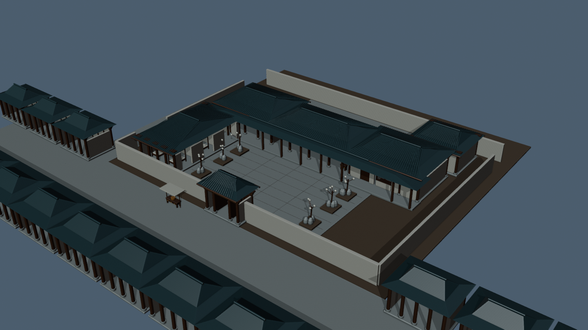
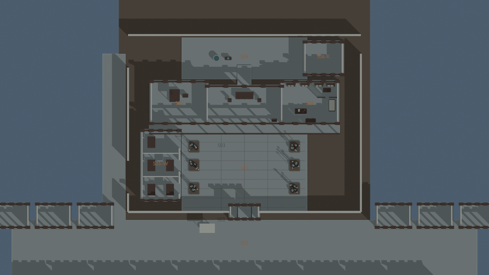
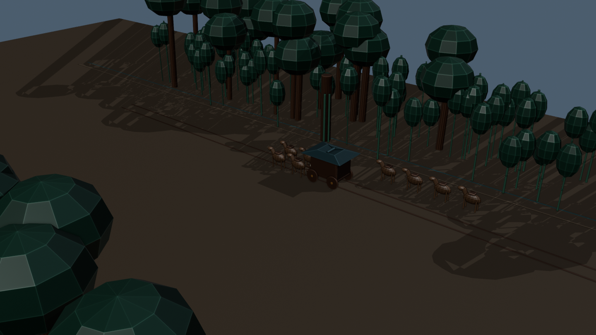
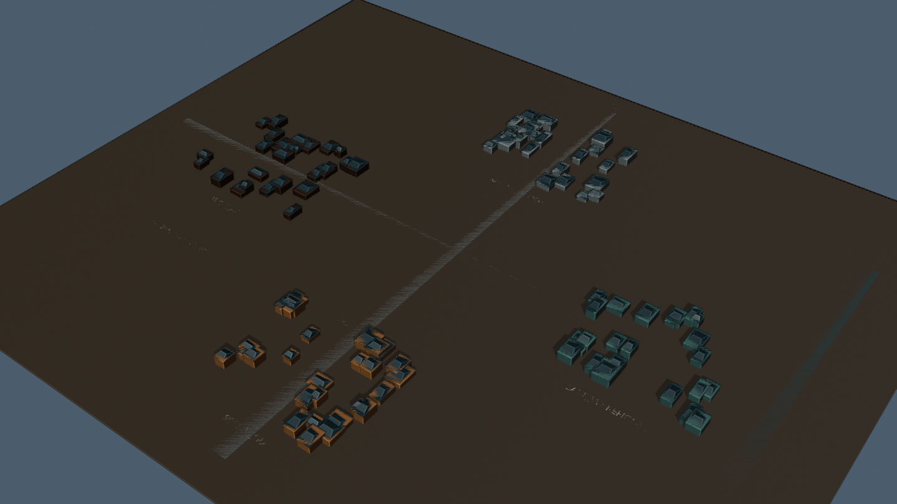
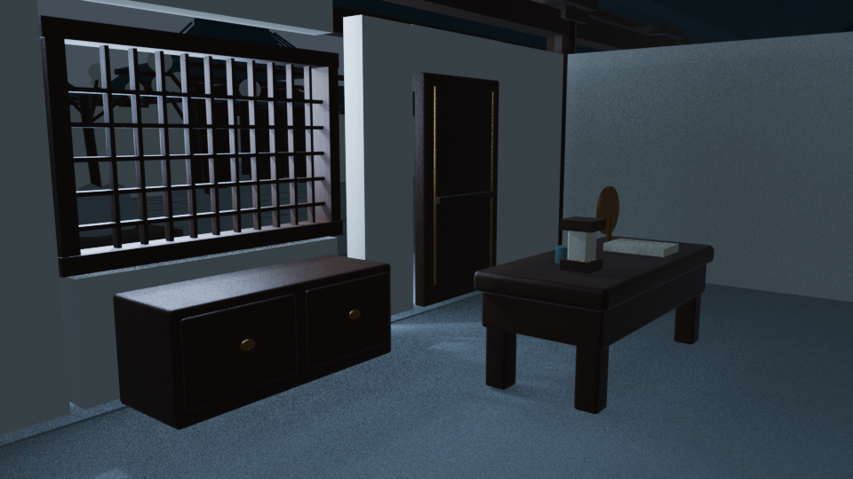
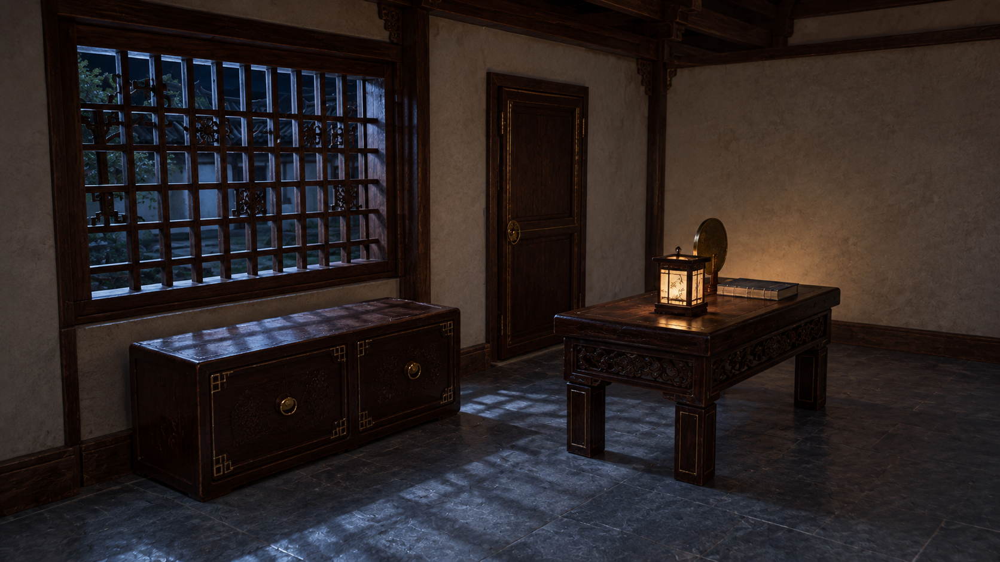

这是空间、光照与代理走位预演。人物为无身份代理体；美术候选未选版；AI视频尚未生成。五段共43秒是技术样镜集合，非连续剧情，也不代表71镜已经完成。
先看空间

S02—S06共用宅区与街段
剖面只供量尺核对；不是剧情机位
37米工作路宽；四驾与四坐骑分开
四区关系示意，不能按此重算城市行程五个已有镜头
待送入AI的10秒空景
移除人物代理，保留书房完整摇镜。当前为Blender渲染，AI返回视频尚未生成。
灰模到美术：一次结构保持试验

原始三维空景 / 空间依据

内置图像生成候选 / 材质与雕工参考，几何未获通过
图像候选增加了梁柱装饰和窗格细节，需核几何偏差；不能替代原相机或认定整段视频会保留空间。
交付说明与尚未完成项 · 共用母场 · 文件与视频检查 · 空间检查范围